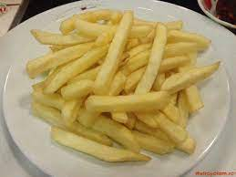

Cartofi la Tigaie

Descriere:
Cartofii prăjiți sau cartofii pai sunt extrem de populari și, prin urmare, fac parte din multe rețete de mâncare.
Cartofii prăjiți făcuți în acest fel sunt crocanți în exterior și fragezi în interior, așa că sunt plăcuți de toți oamenii care au șansa să-i guste.
Ingrediente:
Pasi Urmat
- decojește cartofii și taie-i pe lungime în fâșii înguste
- toarnă ulei în abundență (circa 1 l la fiecare 3 porții) într-o tigaie și așteaptă să se încingă la temperatură foarte înaltă (poți folosi și un prăjitor cu baie de ulei)
- când uleiul este fierbinte, pune cartofii în tigaie
- amestecă cartofii ușor să fie acoperiți uniform cu ulei, apoi nu-i mai atinge până când nu sunt prăjiți în partea inferioară (FOARTE IMPORTANT!)
- întoarce cu atenție cartofii pai încă o dată sau de două ori să fie prăjiți uniform
- scoate acești cartofi prăjiți crocanți din tigaie sau baie de ulei, scurge-i bine de ulei, și pune-i pe un platou termorezistent
- servește acești delicioși cartofi prăjiți cât sunt fierbinți